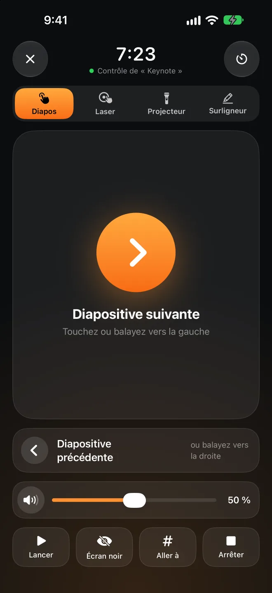

Partez, il se verrouille.Revenez, il s’ouvre.
Presence s’installe dans la barre des menus de votre Mac et capte le signal Bluetooth que votre iPhone ou votre Apple Watch émet déjà. Quand le signal faiblit, l’écran se verrouille. Quand vous revenez à votre bureau, il se déverrouille pour vous. Rien à installer sur votre téléphone ni sur votre montre.
L’app Mac est gratuite et open source. Nécessite macOS 26 ou version ultérieure.
et il se déverrouille Allez jusque-là
et il se verrouille
Apple Watch à proximité−52 dBm
Faites glisser Vous vers la droite et observez quand le Mac se verrouille. Puis revenez.
Mieux vaut déverrouiller un peu tard que verrouiller à tort.
Le signal Bluetooth fluctue : il suffit de vous retourner pour qu’il change beaucoup. Presence suit quelques règles prudentes, pour ne pas verrouiller votre Mac alors que vous êtes devant, et pour que personne d’autre n’y accède.
Une tendance sur quelques secondes, pas une seule mesure
Presence prend la médiane des 4 dernières secondes, avec au moins 3 mesures. Un pic ou une chute soudaine ne compte pas.
Deux seuils : un pour verrouiller, un pour déverrouiller
Le seuil de verrouillage est plus bas que celui de déverrouillage : entre les deux, le Mac ne se verrouille et ne se déverrouille pas en boucle. Pour calibrer un appareil, restez 8 secondes là où le Mac doit se déverrouiller, puis 8 secondes là où il doit se verrouiller.
Vous tapez encore ? Il attend
Si le signal faiblit mais que quelqu’un utilise encore le clavier ou la souris, le verrouillage attend.
Il interroge votre iPhone avant de déverrouiller
Avec Presence Remote, avant de saisir votre mot de passe, votre Mac demande à votre iPhone de répondre avec la clé échangée lors du jumelage. Un signal Bluetooth falsifié ne suffit pas à déverrouiller votre Mac.
L’Apple Watch d’abord
Avant de déverrouiller, Presence attend quelques secondes pour laisser macOS déverrouiller le Mac avec votre Apple Watch. Il ne saisit votre mot de passe que si le Mac est encore verrouillé, par petits groupes de caractères, en vérifiant avant chacun que l’écran de connexion est toujours affiché.
Il verrouille quand il le faut. Et vous laisse tranquille le reste du temps.
Tout cela est inclus dans l’app Mac, gratuitement.
Pas de verrouillage en pleine présentation
Pendant la lecture d’un diaporama dans Keynote ou PowerPoint, le verrouillage automatique est suspendu. Vous pouvez aller à l’avant de la salle sans que le vidéoprojecteur affiche soudain l’écran de connexion.
Plus souple à la maison
Pas de verrouillage automatique sur un réseau de confiance, quand le Mac est branché sur secteur ou en dehors des horaires que vous choisissez. Les réseaux sont reconnus grâce au routeur : aucune autorisation de localisation n’est nécessaire.
Suspendre un moment
Vous prêtez votre Mac ou partez en réunion ? Suspendez Presence entre 15 minutes et 4 heures. Si vous n’êtes pas là à la fin, le Mac se verrouille aussitôt.
Sachez si quelqu’un le déverrouille en votre absence
Si quelqu’un déverrouille votre Mac à la main alors que vous n’êtes pas à proximité, c’est noté dans l’historique. Presence peut aussi prendre une photo et prévenir votre iPhone.
Le temps passé assis aujourd’hui
La fonction « Temps au bureau » suit votre journée et les 7 derniers jours, et vous invite à vous lever après une trop longue période assise.
Vous venez de BLEUnlock
Presence part de l’idée de BLEUnlock et a été réécrit pour les versions actuelles de macOS. Importez vos appareils et vos seuils en un clic.



Sur scène, votre téléphone sert de télécommande.
Pas de télécommande à acheter, pas de récepteur à brancher. Déplacez le doigt sur votre téléphone : un point rouge, le halo du projecteur ou un trait de surligneur apparaît au même endroit sur le grand écran. Essayez sur le téléphone ci-dessous.
Choisissez Laser, Projecteur ou Surligneur, puis touchez la zone tactile du téléphone et faites glisser le doigt. Les traits de surligneur s’estompent après quelques secondes et disparaissent quand vous changez de diapositive.
Touchez ou balayez pour changer de diapositive
Allez directement à une diapositive, affichez un écran noir, lancez et arrêtez le diaporama.
Depuis l’écran verrouillé
Des boutons pour changer de diapositive sur l’écran verrouillé et dans la Dynamic Island, sans déverrouiller l’iPhone.
L’Apple Watch sert aussi de télécommande
Touchez l’écran, tournez la Digital Crown ou utilisez le geste Toucher deux fois. Balayez vers la gauche pour régler le volume du Mac.
Minuteur de présentation
Indiquez la durée de votre intervention. Un tapotement au poignet vous prévient quand il reste 5 minutes, puis quand le temps est écoulé.
Le volume de votre Mac
La vidéo de votre présentation est trop forte ou trop faible ? Réglez le volume sans retourner à votre Mac. Aucun indicateur de volume ne s’affiche sur le grand écran.
Toutes les apps de présentation
Keynote, PowerPoint, Google Slides, PDF. Le point rouge et le projecteur s’affichent par-dessus tout le reste et ne cliquent jamais sur rien.
Le verrouillage est gratuit. La télécommande fait partie de Pro.
L’app Mac et Presence Remote pour iPhone et Apple Watch sont gratuites. Seule la télécommande de présentation fait partie de Presence Pro.
App Mac
Open source, notarisée par Apple, avec mises à jour automatiques.
- Se verrouille quand vous partez, se déverrouille à votre retour
- Reste déverrouillé pendant vos présentations ou chez vous
- Historique et temps au bureau
Presence Remote
L’app compagnon pour iPhone et Apple Watch.
- Verrouillage depuis votre iPhone, votre montre ou le centre de contrôle
- Suspension et reprise du verrouillage automatique
- Notifications quand votre Mac se verrouille ou que quelqu’un le déverrouille
- Confirmation chiffrée avant le déverrouillage
Presence Pro
Télécommande de présentation : diapos, laser, projecteur, surligneur, volume et minuteur de présentation, sur iPhone et Apple Watch.
Les deux abonnements commencent par un essai gratuit de 7 jours. Les trois formules sont compatibles avec le Partage familial.
Passer à Pro dans l’appVotre Mac n’écoute que votre téléphone.
Pas de compte, pas de serveur
Votre Mac et votre téléphone communiquent directement en Bluetooth, jamais par Internet. Le développeur ne reçoit rien de vous.
Chaque commande est chiffrée
Le jumelage crée une clé que seuls vos appareils partagent. Chaque commande et chaque état sont chiffrés et vérifiés avec cette clé : le téléphone de quelqu’un d’autre ne peut pas envoyer de commandes.
Votre mot de passe reste dans votre trousseau
Le mot de passe de session utilisé pour déverrouiller est stocké dans le trousseau de votre Mac, et seulement après que Presence a vérifié qu’il est correct.
Open source
L’app Mac est entièrement open source. Vous pouvez voir exactement comment elle décide et comment elle déverrouille.
Questions
Faut-il installer une app sur mon téléphone ?
Non. Presence capte le signal Bluetooth que votre iPhone et votre Apple Watch émettent déjà : l’app Mac suffit pour verrouiller et déverrouiller. Avec Presence Remote, vous pouvez aussi verrouiller à distance, recevoir des notifications et ajouter une confirmation chiffrée avant le déverrouillage ; Presence Pro ajoute la télécommande de présentation.
De quoi ai-je besoin ?
Un Mac avec Bluetooth LE et macOS 26 ou version ultérieure. Presence Remote nécessite iOS 26 ou watchOS 26, ou version ultérieure. Vous pouvez aussi n’utiliser qu’une Apple Watch, ou un autre appareil Bluetooth qui émet régulièrement avec une adresse fixe.
Quelle différence avec le déverrouillage du Mac par l’Apple Watch ?
La fonction intégrée ne fait que déverrouiller : elle ne verrouille pas quand vous partez. Presence fait les deux. Pour déverrouiller, il attend d’abord quelques secondes que votre montre déverrouille le Mac, et ne saisit votre mot de passe que si elle ne l’a pas fait. Les deux fonctionnent ensemble.
Risque-t-il de se verrouiller alors que je ne bouge pas ?
Le signal doit rester faible pendant plusieurs secondes, et le seuil de verrouillage est plus bas que celui de déverrouillage. Si vous tapez encore ou utilisez la souris, le verrouillage attend. Si c’est encore trop sensible, recalibrez depuis la page « Appareils ».
Pourquoi l’app Mac n’est-elle pas sur le Mac App Store ?
Déverrouiller automatiquement implique de saisir votre mot de passe de session, ce que les apps du Mac App Store n’ont pas le droit de faire. L’app Mac est donc notarisée par Apple, téléchargée depuis GitHub, et se met à jour toute seule.
Quelles apps de présentation sont compatibles ?
Pour changer de diapositive, Presence envoie les touches fléchées, que Keynote, PowerPoint, Google Slides et les lecteurs PDF comprennent. Le laser, le projecteur et le surligneur sont dessinés par Presence par-dessus tout le reste : ils fonctionnent quel que soit le contenu de l’écran. Activez d’abord « iPhone et montre › Autoriser la télécommande de présentation » dans Presence sur votre Mac.
Est-ce que ça consomme beaucoup de batterie ?
Votre iPhone et votre Apple Watch émettent ces signaux de toute façon ; Presence se contente de les écouter sur votre Mac, où il utilise normalement moins de 1 % du processeur.